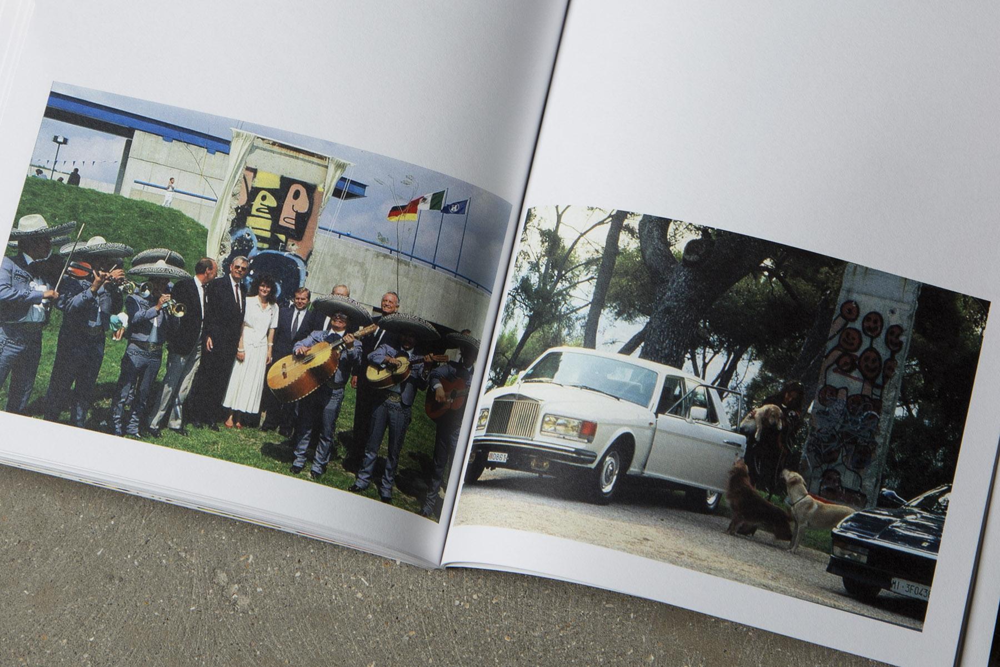

The CSM BA Fine Art class of 2015 asked us to design their graduation catalog.
The initial brief was to make the catalog softcovered and magazinesized, with the layout taking the classic minimalist approach of “letting the artworks speak for themselves” and thereby “adding as little design as possible”, while at the same time avoiding the standard format of straight imageblurb-imageblurb.
For each of the almost 150 artist/students we had to accompany images of artworks, descriptions, and a blurb. There were also seven commissioned texts and one interview to include. That the catalog be thin and “magazinelike” was an important aspect to the committee.


Our solution was to develop a grid system with the ability to accommodate all of those different elements, but that would also look good if it were in places to contain only one of the elements, as we anticipated that the contributors would not all be supplying the same kind of content. And due to the sheer volume of content, our system had to be very rational and leave very few variables for us to adjust, so that we wouldn’t have to obsess over details too much. At the same time the system had to have a certain flexibility to it, in order to give the impression of a publication in constant flux.
We ended up splitting the spread in four, so that we could accompany four students on each spread and in turn keep the overall thickness of the publication to a minimum.
For us, there was no other option but to do a typographic cover. To honour the concept already employed on the inside - of minimalism, white space, and some deviation from the typical degree show catalog, we decided to do a full alphabetical index of all contributing students with their contact details, stretching over the front and back covers.
Thanks to Phil Baines, our typography professor at the time, for providing invaluable feedback.
BA Fine Art Catalog 2015
BA Fine Art, Central Saint Martins
Soft Cover Catalog
(more)
Variations I was conceived as a series of chance operations that ultimately led to the creation of a publication realised by Central Saint Martins students in London.
Variations I consists of a set of instructions that like musical scores have the potential to be realised by anyone other than the original creator. The instructions involve real and imaginary actions, ideas, and objects from everyday life re-contextualised as performance. (more)


Taking its name from an experimental musical score written by the American composer John Cage in 1958, Variations I aims to turn its readers into active interpreters and participants by enabling them to perform, interpret and play with the instructions in different ways.
Inspired by Fluxus and conceptual artistic and curatorial practices of the 1960s, this publication could be seen as having a tripartite nature: as an “object” to be played with, a “portable exhibition” consisting of “Open Works”, and as a collection of “Texts” to be performed.
Our role in this collaboration was as art directors, designers, co-curators, and contributors. The publication was risograph printed, french-folded, and bound with a binding clip. These factors all serve the purpose of making a cost-effective, intriguing, tactile object that could be easily disassembled, reassebled, and used.
variations1.tumblr.com
Variations I
with Marta Cacciavillani
Artist publication, 2014
(more)
“We are all digital hoarders” - Kenneth Goldsmith
ZeenZeen is the first in a developing series of publications exploring the concept of digital hoarding. It consists of the collections of screen shots and downloaded imagery sitting on the desktops of the two authors (us). (more)
We realised that “digital hoarding”, as Kenneth Goldsmith would call it, might be a side-effect of what we do day-to-day; a kind of constant sense of research, a subconscious instinct that kicks in during daily life at the computer, when suddenly we spot something of interest that prompts us to take a screen shot and drop it in a folder on the desktop, where under normal circumstances it would just stay untouched together with hundreds of others.
ZeenZeen is our way of making use of - and trying to make sense of - this “instinct”, and of presenting it to the world in a somewhat readable way, yet maintaining the chaotic nature of the process and the internet in general, a book being the possibly most unlikely destiny for our material.
It is printed and published through Lulu.com, and can be ordered here.
ZeenZeen
Studio Bergini
Zine, 2015
(more)
Central Saint Martins celebrated the launch of CSM Public on January 14 2016 with Art, Design and the Common Good, an evening of debate and exhibitions exploring how art and design schools can collaborate with academic, corporate, non-profit, and government organisations to develop new ways of engaging with societal issues.
(more)
For the launch, we were approached to design a tabloid publication to showcase the projects that CSM have already initiated in the spirit of CSM Public.
There was a good mix of articles, essays, student spotlights, and box-outs. In order to unify all the content and present it in a simple, logical way without making the publication feel static, we developed a flexible layout combining the structure of a newspaper and the variation of a magazine.
You can read more about CSM Public here, and also download the pdf version of the publication.
CSM Public
Central Saint Martins, CSM Public
Promotional publication, 2016
(more)
We produced this publication for Howard Griffin Gallery London on the occasion of Thierry Noir’s first ever retrospective exhibition. The booklet is comprised of an artist statement and an interview, as well as Noir’s own photos with accompanying stories. (more)

- 
From the gallery website:
Thierry Noir: A Retrospective was the first solo exhibition of the infamous Berlin Wall artist Thierry Noir. In 1984, Noir was the first artist to illegally paint mile upon mile of the Berlin Wall. Noir wanted to perform one real revolutionary act: to paint the Wall, to transform it, to make it ridiculous, and ultimately to help destroy it.
Noir's iconic, bright and seemingly innocent works painted on this deadly border symbolised a sole act of defiance and a lone voice of freedom. In this landmark exhibition at Howard Griffin Gallery in Shoreditch new original works were exhibited alongside rarely seen photographs, interviews and films, juxtaposing old and new to reassess Noir's enduring legacy and contribution to society.
howardgriffingallery.com/exhibitions/thierry-noir-a-retrospective